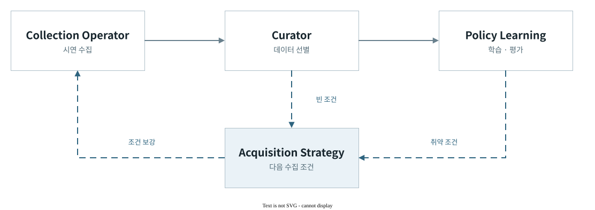

Closed-loop Data Engine for Imitation Learning
폐루프 모방학습데이터 엔진
데이터의 라이프사이클을 연결해
정책 성능을 높이기 위한 시스템이다.
구현·검증 플랫폼 · FAIRINO FR5
폐루프 아키텍처Collection Operator · Recorded Demonstrations2026.09.07
UP 작업 영역WRIST 그리퍼 주변
Pick · 12.1초2026.09.07 수집 · 실제 속도 · 고정·손목 카메라
영상 원본 ↗물체에 접근해 파지하고 들어 올린다.
UP 작업 영역WRIST 그리퍼 주변
Pick & Place · 21.1초2026.09.07 수집 · 실제 속도 · 고정·손목 카메라
영상 원본 ↗물체를 파지해 다른 작업영역에 놓고 후퇴한다.
평가에서 다음 수집으로
시스템 아키텍처 ↗
현재 구현과 연구 목표
수집·선별·학습·오프라인 평가와 조건별 수집 추천을 구현했다. 실물 정책 평가를 통한 재수집·재학습 효과는 후속 검증 대상이다.
수집 전략의 비교 설계 ↗ · 기반 기술과 구현 범위 ↗